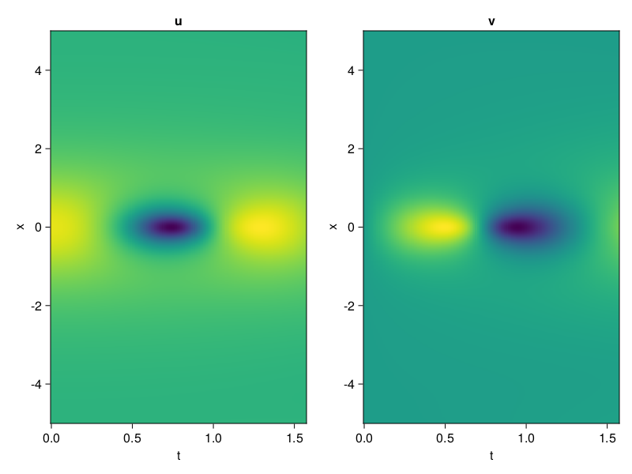
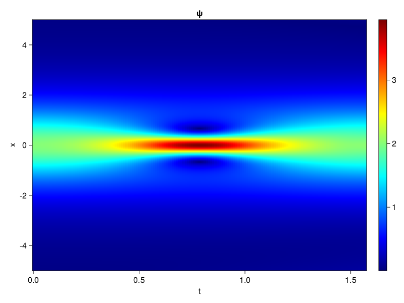
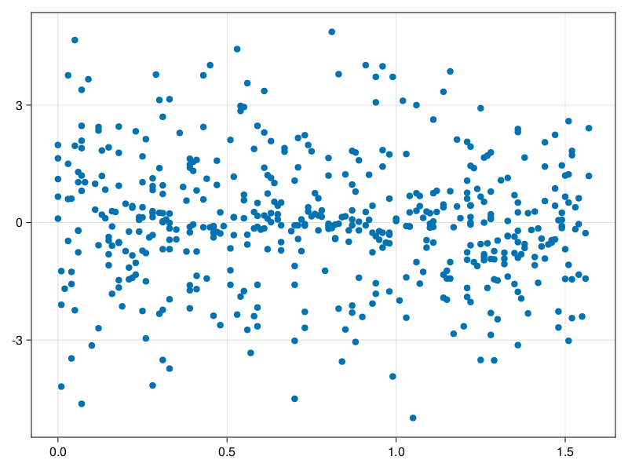

Schrödinger equation
The nonlinear Shrödinger equation is given by
\[\mathrm{i} \partial_t \psi=-\frac{1}{2} \sigma \partial_{x x} \psi-\beta|\psi|^2 \psi\]
Let $\sigma=\beta=1, \psi=u+v i$, the equation can be transformed into a system of partial differential equations
using ModelingToolkit, IntervalSets, Sophon, CairoMakie
using Optimization, OptimizationOptimJL
@parameters x,t
@variables u(..), v(..)
Dₜ = Differential(t)
Dₓ² = Differential(x)^2
eqs=[Dₜ(u(x,t)) ~ -Dₓ²(v(x,t))/2 - (abs2(v(x,t)) + abs2(u(x,t))) * v(x,t),
Dₜ(v(x,t)) ~ Dₓ²(u(x,t))/2 + (abs2(v(x,t)) + abs2(u(x,t))) * u(x,t)]
bcs = [u(x, 0.0) ~ 2sech(x),
v(x, 0.0) ~ 0.0,
u(-5.0, t) ~ u(5.0, t),
v(-5.0, t) ~ v(5.0, t)]
domains = [x ∈ Interval(-5.0, 5.0),
t ∈ Interval(0.0, π/2)]
@named pde_system = PDESystem(eqs, bcs, domains, [x,t], [u(x,t),v(x,t)])\[ \begin{align} \frac{\mathrm{d}}{\mathrm{d}t} u\left( x, t \right) =& - \frac{1}{2} \frac{\mathrm{d}^{2}}{\mathrm{d}x^{2}} v\left( x, t \right) - \left( \left|u\left( x, t \right)\right|^{2} + \left|v\left( x, t \right)\right|^{2} \right) v\left( x, t \right) \\ \frac{\mathrm{d}}{\mathrm{d}t} v\left( x, t \right) =& \frac{1}{2} \frac{\mathrm{d}^{2}}{\mathrm{d}x^{2}} u\left( x, t \right) + \left( \left|u\left( x, t \right)\right|^{2} + \left|v\left( x, t \right)\right|^{2} \right) u\left( x, t \right) \end{align} \]
pinn = PINN(u = Siren(2,1; hidden_dims=16,num_layers=4, omega = 1.0),
v = Siren(2,1; hidden_dims=16,num_layers=4, omega = 1.0))
sampler = QuasiRandomSampler(500, (200,200,20,20))
strategy = NonAdaptiveTraining(1,(10,10,1,1))
prob = Sophon.discretize(pde_system, pinn, sampler, strategy)OptimizationProblem. In-place: true
u0: ComponentVector{Float64}(u = (layer_1 = (weight = [0.3557576537132263 -0.4056541323661804; 0.47394847869873047 0.2839627265930176; … ; -0.10568362474441528 -0.37448835372924805; -0.10173696279525757 0.4749618172645569], bias = [0.0; 0.0; … ; 0.0; 0.0;;]), layer_2 = (weight = [0.5026121735572815 -0.00105792295653373 … 0.19718049466609955 0.47429344058036804; -0.19953221082687378 -0.17390181124210358 … 0.17337773740291595 0.16162583231925964; … ; 0.1424722671508789 -0.6114628314971924 … -0.5613430142402649 0.501322329044342; 0.611520528793335 -0.3999100625514984 … -0.12954241037368774 0.2913253605365753], bias = [0.0; 0.0; … ; 0.0; 0.0;;]), layer_3 = (weight = [0.1350513994693756 -0.5541331768035889 … -0.5422292947769165 -0.005701118148863316; -0.0015968125080689788 0.39932137727737427 … 0.5261499881744385 0.12111502140760422; … ; 0.46910589933395386 -0.5152112245559692 … -0.5293275117874146 0.26641640067100525; 0.22770068049430847 -0.582056999206543 … -0.49646422266960144 -0.5635184049606323], bias = [0.0; 0.0; … ; 0.0; 0.0;;]), layer_4 = (weight = [0.40179887413978577 -0.2356349527835846 … -0.23497730493545532 -0.2577192783355713; -0.155166894197464 0.14210374653339386 … 0.14322665333747864 -0.26465585827827454; … ; -0.0651278868317604 -0.49208199977874756 … 0.005956911947578192 -0.36847737431526184; 0.1387699693441391 -0.11526921391487122 … -0.013923454098403454 0.24910888075828552], bias = [0.0; 0.0; … ; 0.0; 0.0;;]), layer_5 = (weight = [0.2876066267490387 -0.34760215878486633 … 0.05220300704240799 -0.03729601576924324], bias = [0.0;;])), v = (layer_1 = (weight = [-0.00047343969345092773 0.2023221254348755; 0.1259598731994629 -0.1151190996170044; … ; -0.14703631401062012 0.10805732011795044; 0.33003878593444824 -0.3183988332748413], bias = [0.0; 0.0; … ; 0.0; 0.0;;]), layer_2 = (weight = [-0.381479412317276 -0.21735921502113342 … -0.3641451597213745 0.45345860719680786; 0.3688874840736389 -0.21302387118339539 … 0.46531906723976135 0.2820214331150055; … ; 0.07571303099393845 0.06981728971004486 … 0.37037017941474915 -0.24724598228931427; 0.24199789762496948 -0.3828064799308777 … 0.20539596676826477 0.1961006075143814], bias = [0.0; 0.0; … ; 0.0; 0.0;;]), layer_3 = (weight = [-0.4443613588809967 -0.5028782486915588 … -0.060014642775058746 0.37952569127082825; -0.247482568025589 -0.5513970851898193 … -0.5743880867958069 -0.44676315784454346; … ; 0.4230468273162842 0.3400062918663025 … 0.19229216873645782 0.442400187253952; -0.4543744623661041 0.13334916532039642 … 0.35809165239334106 0.4842725396156311], bias = [0.0; 0.0; … ; 0.0; 0.0;;]), layer_4 = (weight = [-0.30208173394203186 -0.24765382707118988 … -0.26038628816604614 -0.05425490438938141; -0.05812356621026993 -0.141556978225708 … -0.6107626557350159 0.20700030028820038; … ; 0.16135960817337036 -0.5882107615470886 … 0.3709801733493805 0.1990850865840912; -0.25031140446662903 0.43980780243873596 … -0.47203636169433594 0.43696874380111694], bias = [0.0; 0.0; … ; 0.0; 0.0;;]), layer_5 = (weight = [-0.11275435239076614 0.048440344631671906 … -0.015473181381821632 -0.5390239953994751], bias = [0.0;;])))Now we train the neural nets and resample data while training.
function train(pde_system, prob, sampler, strategy, resample_period = 500, n=10)
bfgs = BFGS()
res = Optimization.solve(prob, bfgs; maxiters=2000)
for i in 1:n
data = Sophon.sample(pde_system, sampler)
prob = remake(prob; u0=res.u, p=data)
res = Optimization.solve(prob, bfgs; maxiters=resample_period)
end
return res
end
res = train(pde_system, prob, sampler, strategy)u: ComponentVector{Float64}(u = (layer_1 = (weight = [0.31710677910319857 -0.232434942616322; 0.39529581624840476 0.042021436249203535; … ; 0.13391517539623665 -0.1769720734115641; -0.44046765457523934 -0.0063360844181439245], bias = [0.4511681337586529; 0.02061052706941385; … ; -0.0394773504316157; 0.07145451185093114;;]), layer_2 = (weight = [0.5488851559772336 0.11610049685946619 … 0.12105568183067321 0.5203013322914524; -0.31091066615455387 -0.15178704513542587 … 0.08911328407976214 0.06746563592373242; … ; 0.0862728892991388 -0.6433778820704169 … -0.6636515275589515 0.6308837871333566; 0.48274846960571627 -0.45837963997666537 … -0.034363852851999395 0.2656063277122256], bias = [0.2706196581400342; -0.0965157757109062; … ; -0.20424003690082695; -0.31099330034660894;;]), layer_3 = (weight = [0.030165567297492472 -0.5399915621838 … -0.4258851023889878 -0.25846819057285214; 0.11636383292176439 0.008276756465418998 … 1.0349483464172258 0.04119667138155121; … ; 0.46843776994236136 -0.6370145619286652 … -0.5318783218584383 0.16946623181018258; 0.15136001529718573 -0.822336474316602 … -0.21774373094234406 -0.5177501293253822], bias = [-0.23827434603224795; 0.44842611214387734; … ; 0.057450247967379534; -0.1244650212365676;;]), layer_4 = (weight = [0.5477624864763165 -0.04465223096637635 … -0.4144221239618697 -0.13630019127694837; -0.10871265173956587 -0.08582378766550872 … 0.2063861534781837 -0.14999104652789463; … ; 0.329997476577864 -0.1615458619739631 … -0.33132243724045246 -0.26491337000451926; -0.023709575371456824 0.11014874499187913 … -0.07642356494080275 0.1405604606623894], bias = [0.027612300605751598; -0.10198500321086763; … ; -0.3576987544226822; -0.019957312474607372;;]), layer_5 = (weight = [1.5098058010518942 -0.7544761821102662 … 0.5317553662920086 0.4568501137237885], bias = [0.2213291516516447;;])), v = (layer_1 = (weight = [0.13899300609109339 0.8599561130737466; 0.09327653139296732 0.3024749768039361; … ; -0.22662109395719301 -0.4154343429660729; 0.0900550804815001 -0.22218388285285515], bias = [-0.5058897145228977; -0.2697144975768722; … ; -0.19576397632109646; -0.03984706814937562;;]), layer_2 = (weight = [-0.3284620057809713 -0.3389234941085371 … -0.41791865327739636 0.42227578492215767; 0.3776524164912744 -0.1463218999566981 … 0.4932483994282857 0.267663859948586; … ; -0.018434184626709704 0.040702127135881463 … 0.7220898008544232 -0.2406761080557577; 0.2241660626633823 -0.43227489592183926 … 0.02244133704777257 0.454333629577496], bias = [0.13492418139823023; 0.04030261412662147; … ; -0.23627804947335973; -0.018098651128601685;;]), layer_3 = (weight = [-0.5129576506844328 -0.2886134380135466 … -0.16520468099953267 0.5580083946599008; -0.40002041237284697 -0.7293006846339994 … -0.6237407045027826 0.01211030470666044; … ; 0.1921535231524139 0.7740945399099315 … -0.09156576139029073 0.36530324358842975; -0.49642344630899526 0.2557244289492062 … 0.13334993594818179 0.4334396523988979], bias = [-0.13443704762844547; 0.06395880179512092; … ; 0.1424676466025772; -0.047947320616581635;;]), layer_4 = (weight = [-0.25468793092507924 -0.023999079557485252 … -0.1755649046327371 0.1306322599541313; -0.02522979397112717 -0.4129575701672057 … -0.6867534922683096 0.026315260886175126; … ; 0.12172137486649474 -0.2833618064475359 … 0.5735993880951753 0.08118899924943766; -0.41803986038764857 0.45431287703081275 … -0.3166573244634095 0.7402669746100232], bias = [0.06786452548185722; -0.3191691574811589; … ; 0.038420387819621975; 0.06330236058891148;;]), layer_5 = (weight = [0.3972288152165304 0.7400850997742575 … 0.6456049360392879 -0.7385887794897062], bias = [0.008811021864652623;;])))phi = pinn.phi
ps = res.u
xs, ts= [infimum(d.domain):0.01:supremum(d.domain) for d in pde_system.domain]
u = [sum(phi.u(([x,t]), ps.u)) for x in xs, t in ts]
v = [sum(phi.v(([x,t]), ps.v)) for x in xs, t in ts]
ψ = @. sqrt(u^2+ v^2)
axis = (xlabel="t", ylabel="x", title="u")
fig, ax1, hm1 = heatmap(ts, xs, u', axis=axis)
ax2, hm2= heatmap(fig[1, end+1], ts, xs, v', axis= merge(axis, (; title="v")))
display(fig)
axis = (xlabel="t", ylabel="x", title="ψ")
fig, ax1, hm1 = heatmap(ts, xs, ψ', axis=axis, colormap=:jet)
Colorbar(fig[:, end+1], hm1)
display(fig)
Customize Sampling
Bascially any sampling method is supportted. For example we can sample data according to the predicted solution.
using StatsBase
data = vec([[x, t] for x in xs, t in ts])
wv = vec(ψ)
new_data = wsample(data, wv, 500)
new_data = reduce(hcat, new_data)
fig, ax = scatter(new_data[2,:], new_data[1,:])
prob.p[1] = new_data
prob.p[2] = new_data
prob = remake(prob; u0 = res.u)
# res = Optimization.solve(prob, bfgs; maxiters=1000)OptimizationProblem. In-place: true
u0: ComponentVector{Float64}(u = (layer_1 = (weight = [0.31710677910319857 -0.232434942616322; 0.39529581624840476 0.042021436249203535; … ; 0.13391517539623665 -0.1769720734115641; -0.44046765457523934 -0.0063360844181439245], bias = [0.4511681337586529; 0.02061052706941385; … ; -0.0394773504316157; 0.07145451185093114;;]), layer_2 = (weight = [0.5488851559772336 0.11610049685946619 … 0.12105568183067321 0.5203013322914524; -0.31091066615455387 -0.15178704513542587 … 0.08911328407976214 0.06746563592373242; … ; 0.0862728892991388 -0.6433778820704169 … -0.6636515275589515 0.6308837871333566; 0.48274846960571627 -0.45837963997666537 … -0.034363852851999395 0.2656063277122256], bias = [0.2706196581400342; -0.0965157757109062; … ; -0.20424003690082695; -0.31099330034660894;;]), layer_3 = (weight = [0.030165567297492472 -0.5399915621838 … -0.4258851023889878 -0.25846819057285214; 0.11636383292176439 0.008276756465418998 … 1.0349483464172258 0.04119667138155121; … ; 0.46843776994236136 -0.6370145619286652 … -0.5318783218584383 0.16946623181018258; 0.15136001529718573 -0.822336474316602 … -0.21774373094234406 -0.5177501293253822], bias = [-0.23827434603224795; 0.44842611214387734; … ; 0.057450247967379534; -0.1244650212365676;;]), layer_4 = (weight = [0.5477624864763165 -0.04465223096637635 … -0.4144221239618697 -0.13630019127694837; -0.10871265173956587 -0.08582378766550872 … 0.2063861534781837 -0.14999104652789463; … ; 0.329997476577864 -0.1615458619739631 … -0.33132243724045246 -0.26491337000451926; -0.023709575371456824 0.11014874499187913 … -0.07642356494080275 0.1405604606623894], bias = [0.027612300605751598; -0.10198500321086763; … ; -0.3576987544226822; -0.019957312474607372;;]), layer_5 = (weight = [1.5098058010518942 -0.7544761821102662 … 0.5317553662920086 0.4568501137237885], bias = [0.2213291516516447;;])), v = (layer_1 = (weight = [0.13899300609109339 0.8599561130737466; 0.09327653139296732 0.3024749768039361; … ; -0.22662109395719301 -0.4154343429660729; 0.0900550804815001 -0.22218388285285515], bias = [-0.5058897145228977; -0.2697144975768722; … ; -0.19576397632109646; -0.03984706814937562;;]), layer_2 = (weight = [-0.3284620057809713 -0.3389234941085371 … -0.41791865327739636 0.42227578492215767; 0.3776524164912744 -0.1463218999566981 … 0.4932483994282857 0.267663859948586; … ; -0.018434184626709704 0.040702127135881463 … 0.7220898008544232 -0.2406761080557577; 0.2241660626633823 -0.43227489592183926 … 0.02244133704777257 0.454333629577496], bias = [0.13492418139823023; 0.04030261412662147; … ; -0.23627804947335973; -0.018098651128601685;;]), layer_3 = (weight = [-0.5129576506844328 -0.2886134380135466 … -0.16520468099953267 0.5580083946599008; -0.40002041237284697 -0.7293006846339994 … -0.6237407045027826 0.01211030470666044; … ; 0.1921535231524139 0.7740945399099315 … -0.09156576139029073 0.36530324358842975; -0.49642344630899526 0.2557244289492062 … 0.13334993594818179 0.4334396523988979], bias = [-0.13443704762844547; 0.06395880179512092; … ; 0.1424676466025772; -0.047947320616581635;;]), layer_4 = (weight = [-0.25468793092507924 -0.023999079557485252 … -0.1755649046327371 0.1306322599541313; -0.02522979397112717 -0.4129575701672057 … -0.6867534922683096 0.026315260886175126; … ; 0.12172137486649474 -0.2833618064475359 … 0.5735993880951753 0.08118899924943766; -0.41803986038764857 0.45431287703081275 … -0.3166573244634095 0.7402669746100232], bias = [0.06786452548185722; -0.3191691574811589; … ; 0.038420387819621975; 0.06330236058891148;;]), layer_5 = (weight = [0.3972288152165304 0.7400850997742575 … 0.6456049360392879 -0.7385887794897062], bias = [0.008811021864652623;;])))